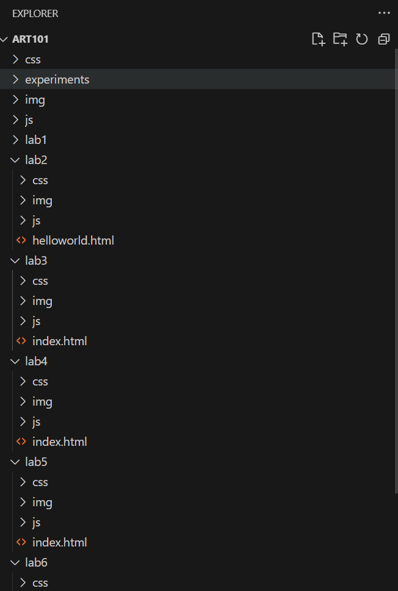

Lab 3 - File Structure and File Transfer
Challenge
The challenge of this lab was to further develop a local file structure on my computer and add index.html files. Then uploard those files to te server so that they can be seen on my website/browser.
Problems
One of the main problems that arose for me was actually when it came to adding a selfie of myself to my homepage. I actually found out how to get my image added quite quickly however, the image was massive on the page. I had trouble making it smaller despite using the CSS provided in the Lab. It was only until I found out that that I needed to change "img class" to "img id" in my index.html file was I able to apply the edit to the image to make it smaller.
Reflection
I feel that this assignment/lab went pretty well. I defintel took my time looking into the technicalities of the html code. As well as taking my time to experiment with CSS to make my page look nice. Or well, atleast tried to make it look nice. It took a lot of back and forth to get it to a point I was happy with. But regardless I enjoyed this lab as I further explored HTML and CSS.
Results
Here is the result. You can see the index.html file I created as well as the file structure:
